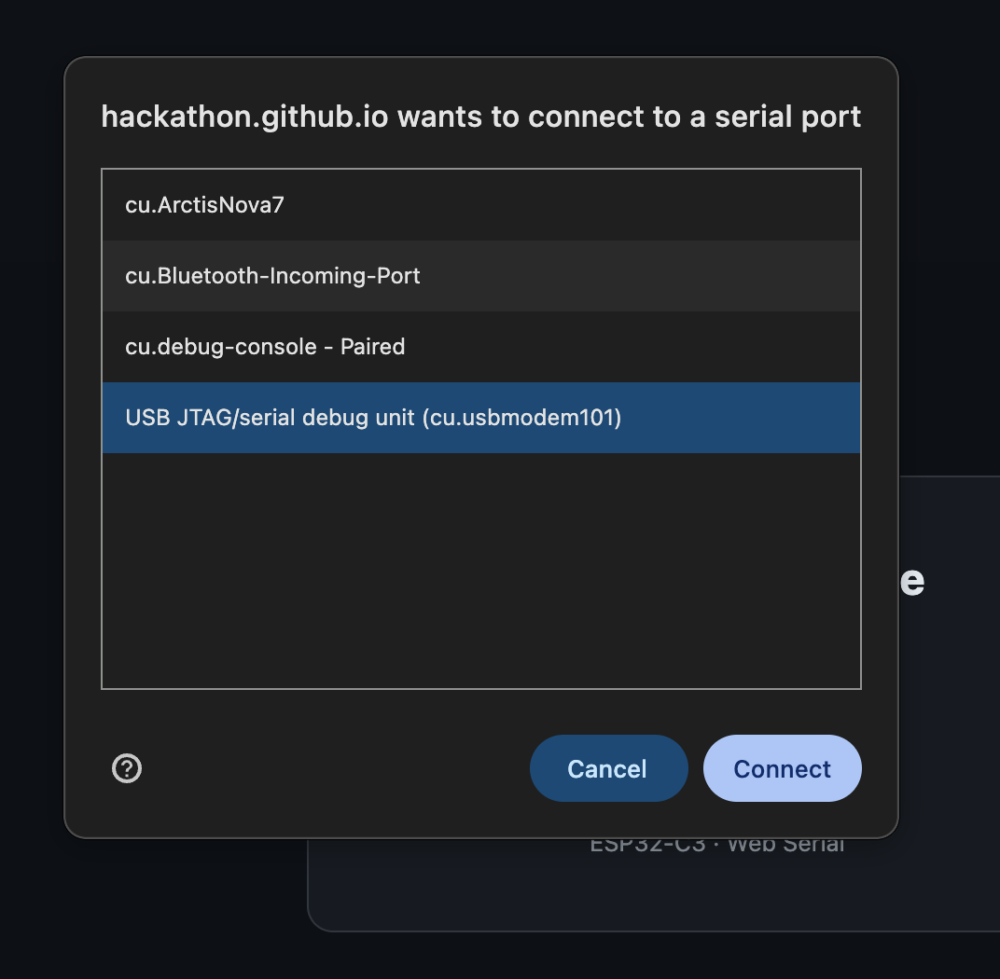

2026 Hacker Badge
2026 黑客徽章
Plug in a badge and flash it.
插入徽章并刷写固件。

Flash a Badge
刷写徽章
Connecting… 连接中…
✓
Flashed successfully
刷写成功
Close
关闭
✕
Try Again
重试
This browser can't access serial devices. Use desktop Chrome, Edge, or Opera over HTTPS.
此浏览器无法访问串口设备。请使用桌面版 Chrome、Edge 或 Opera，并通过 HTTPS 访问。
感谢 JLCPCB 对我们的帮助